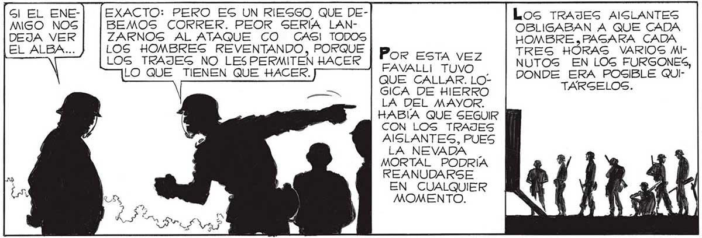

134 (COMPLETAMENTE DE ACUERDO CON EL PROFESOR. HAY QUE ATACAR AHORA | MIGMO HACÍA BB2=z2222== = EL CENTRO. 22222 [UN MOMENTO, GEÑOGl EL ENEMIGO NOS DEJA VER EL ALBA: ¿QUE SUGIERE, PROFESOR? ¿QUE NOG ENTREGUEMOS GIN RESISTIR? ¿QUE NOS DEMOG POR VENCIDOG? RESISTIR, DE GDE == RES, UN MOMENTO. EXACTO: PERO ES UN RIESGO, QUE DEBEMOS CORRER. PEOR SERÍA LANZARNOGS AL ATAQUE CO CASI TODOS LOS HOMBRES REVENTANDO, PORQUE LOS TRAJES NO LESPERMITEN HACER LO QUE TIENEN QUE HACER. NO, MAYOR, NO. NO PORQUE ME PAREZCA HEROICO LUCHAR HAGTA EL FIN, SINO PORQUE NI SABEMOS GlQUIERA QUÉ PRETENDEN HACER DE LA TIERRA LOS INVASORES,HAY QUE LUEGO === Pass UN) y) YA LA ACOMETIVIDAD ES UNA GRAN VIRTUD MILITAR. COMPARABLE SOLO CON LA PRUDENCIA. IMPOSIBLE ATACAR EN SEGUIDA,FALTA MUY POCO PARA QUE ANOCHEZCA, ADEMAS CASI NINGUNO DE NOSOTR === COMIDO NI Por Esta vez FAVALLI TUVO QUE CALLAR. LOGICA DE HIERRO LA DEL MAYOR. HABÍA QUE SEGUIR CON LOS TRAJES AIGLANTES, PUES LA NEVADA | MORTAL PODRÍA REANUDARSE EN CUALQUIER MOMENTO. BEBI ..NO EN LA FORMA PASIVA EN QUE LO HEMOS HECHO HASTA AHORA.G!| CONTINUAMOSG QUIETOS, ESPERANDO, ELLOS, QUE YA NOS CONOCEN BIEN, NOG HARAN SALTAR POR EL AIRE CUANDO MENOS LO PENSEMOS. OS HA Los TRAJES AMSLANTES OBLIGABAN A QUE CADA HOMBRE ,PAGARA CADA TRES HORAS VARIOS MINUTOS EN LOGS FURGONES, DONDE ERA POSIBLE QUITARSELOS. APROVECHAREMOS LA NOCHE PARA DESCANSAR, PARA REPONERNOS, PARA ALIGTARNOS DEBIDAMENTE. MANANA CON LAS PRIMERAS LUCES DEL ALBA, INICIAREMOS LA MARCHA ¿PROPONE USTED, QUE ATAQUEMOS CON LAS POCAS FUERZAS QUE NOS RESTAN? GI, MAYOR. ATACANDO PODREMOS, QUIZA, SORPRENDER AL ENEMIGO, SI NO NOS MOVEMOS, SEGURO QUE NOS SORPRENDEN HACIA EL CENTRO. 77 ESTABA ESPERANDO A QUE USTED SALIERA, TENIENTE.
